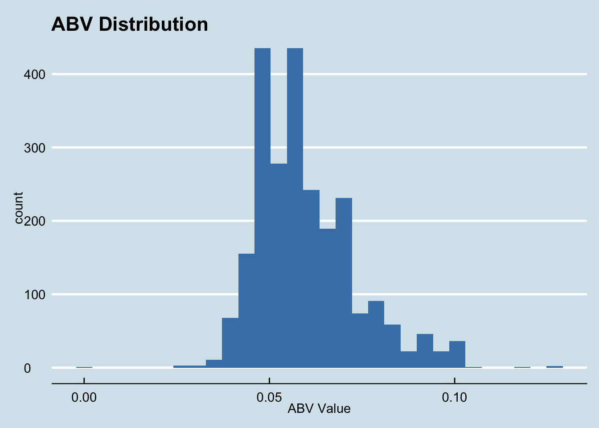

Beer and Breweries Case Study
10/5/2020
Load Libraries
## Loading required package: NLP##
## Attaching package: 'dplyr'## The following objects are masked from 'package:plyr':
##
## arrange, count, desc, failwith, id, mutate, rename, summarise, summarize## The following objects are masked from 'package:stats':
##
## filter, lag## The following objects are masked from 'package:base':
##
## intersect, setdiff, setequal, union## ── Attaching packages ───────────────────────────────────────────────────────────────────── tidyverse 1.3.0 ──## ✓ ggplot2 3.3.2 ✓ purrr 0.3.4
## ✓ tibble 3.0.3 ✓ stringr 1.4.0
## ✓ readr 1.3.1 ✓ forcats 0.5.0## ── Conflicts ──────────────────────────────────────────────────────────────────────── tidyverse_conflicts() ──
## x ggplot2::annotate() masks NLP::annotate()
## x dplyr::arrange() masks plyr::arrange()
## x purrr::compact() masks plyr::compact()
## x dplyr::count() masks plyr::count()
## x dplyr::failwith() masks plyr::failwith()
## x dplyr::filter() masks stats::filter()
## x dplyr::id() masks plyr::id()
## x dplyr::lag() masks stats::lag()
## x dplyr::mutate() masks plyr::mutate()
## x dplyr::rename() masks plyr::rename()
## x dplyr::summarise() masks plyr::summarise()
## x dplyr::summarize() masks plyr::summarize()## Loading required package: lattice##
## Attaching package: 'caret'## The following object is masked from 'package:purrr':
##
## lift## data.table 1.13.0 using 1 threads (see ?getDTthreads). Latest news: r-datatable.com## **********
## This installation of data.table has not detected OpenMP support. It should still work but in single-threaded mode.
## This is a Mac. Please read https://mac.r-project.org/openmp/. Please engage with Apple and ask them for support. Check r-datatable.com for updates, and our Mac instructions here: https://github.com/Rdatatable/data.table/wiki/Installation. After several years of many reports of installation problems on Mac, it's time to gingerly point out that there have been no similar problems on Windows or Linux.
## **********##
## Attaching package: 'data.table'## The following object is masked from 'package:purrr':
##
## transpose## The following objects are masked from 'package:dplyr':
##
## between, first, last## No renderer backend detected. gganimate will default to writing frames to separate files
## Consider installing:
## - the `gifski` package for gif output
## - the `av` package for video output
## and restarting the R session## Registered S3 method overwritten by 'GGally':
## method from
## +.gg ggplot2## Loading required package: ggthemesIntroduction
We have evaluated the data of the Breweries across USA and various different popular Beers with their Alcohol content (ABV) and Bitterness level (IBU). We did a thorough analysis of the data provided and came up with some interesting facts. We also have some recommendations following our data analysis provided towards the end of the presentation.
We analyzed the number of breweries across US. The distribution of breweries varies significantly across the country. Colorado and California are the states with most Breweries. While Delaware and West Virginia are among the states with lowest number of breweries.
Below Bar chart and Heat-map gives a good pictorial representation of the data.

Below is the Heat-map with same data with different visualization.
Heat-map helps to easily identify which states are the ones with the most breweries. The two states with the most breweries are California and Colorado, with 39 and 47 breweries respectively.
Now, we will merge the two data sets. Snippet of merged data is provided below. This merge results in a data-frame of 2410 rows.
## [1] 2410## Brew_ID Brewery City State Beer.Name Beer_ID ABV IBU
## 1 1 NorthGate Brewing Minneapolis MN Pumpion 2689 0.060 38
## 2 1 NorthGate Brewing Minneapolis MN Stronghold 2688 0.060 25
## 3 1 NorthGate Brewing Minneapolis MN Parapet ESB 2687 0.056 47
## 4 1 NorthGate Brewing Minneapolis MN Get Together 2692 0.045 50
## 5 1 NorthGate Brewing Minneapolis MN Maggie's Leap 2691 0.049 26
## 6 1 NorthGate Brewing Minneapolis MN Wall's End 2690 0.048 19
## Style Ounces
## 1 Pumpkin Ale 16
## 2 American Porter 16
## 3 Extra Special / Strong Bitter (ESB) 16
## 4 American IPA 16
## 5 Milk / Sweet Stout 16
## 6 English Brown Ale 16## Brew_ID Brewery City State Beer.Name Beer_ID ABV IBU
## 2405 556 Ukiah Brewing Company Ukiah CA Pilsner Ukiah 98 0.055 NA
## 2406 557 Butternuts Beer and Ale Garrattsville NY Porkslap Pale Ale 49 0.043 NA
## 2407 557 Butternuts Beer and Ale Garrattsville NY Snapperhead IPA 51 0.068 NA
## 2408 557 Butternuts Beer and Ale Garrattsville NY Moo Thunder Stout 50 0.049 NA
## 2409 557 Butternuts Beer and Ale Garrattsville NY Heinnieweisse Weissebier 52 0.049 NA
## 2410 558 Sleeping Lady Brewing Company Anchorage AK Urban Wilderness Pale Ale 30 0.049 NA
## Style Ounces
## 2405 German Pilsener 12
## 2406 American Pale Ale (APA) 12
## 2407 American IPA 12
## 2408 Milk / Sweet Stout 12
## 2409 Hefeweizen 12
## 2410 English Pale Ale 12With the merged data, we first needs to check-out if there are any missing values. After data evaluation, we identified that there are only two variables with missing data. ABV is missing 62 values while IBU is missing 1005 rows.Since its a large number of missing values we need to identify a way to impute the missing values.
## `summarise()` regrouping output by 'key' (override with `.groups` argument)Next we plot IBU and ABV distribution.
## `stat_bin()` using `bins = 30`. Pick better value with `binwidth`.## Warning: Removed 62 rows containing non-finite values (stat_bin).## `stat_bin()` using `bins = 30`. Pick better value with `binwidth`.## Warning: Removed 1005 rows containing non-finite values (stat_bin).Quick visual inspection into the distribution of each variable, we notice that IBU is highly right skewed while ABV is slightly skewed.
Each type of beer style has its unique bitterness which might vary a bit from brand to brand but will still be in same ballpark for the beer style. There are 100 beer styles and more than 1,000 missing values we felt that the best approach was not to impute the missing IBU with the median IBU from all the known data for IBU, instead we decided to impute the missing values with medians for ABV, while for IBU we calculated the median for each beer style and imputed missing data with the median IBU value for that style.
There were also 5 beers with a missing style. We decided to drop those records.
Next, we computed the median Alcohol content (ABV) and median Bitterness (IBU) fir each state.
Median IBU by state:
Median ABV by State:
Delaware and West Virginia are by far leading on the IBU and New Hampshire among the lowest.
In terms of alcohol content West Virginia is leading again which gives an impression there could be a relationship between the IBU and ABV.
Next we identified the states with a Beer with highest Alcohol content (ABV) and Beer with most bitterness.
## Style Brew_ID Brewery City State
## 1 Quadrupel Quad 52 Upslope Brewing Company Boulder CO
## Beer.Name Beer_ID ABV Ounces imputed_IBU
## 1 Lee Hill Series Vol. 5 - Belgian Style Quadrupel Ale 2565 0.128 19.2 24The state with the maximum ABV in a beer is CO. The beer is the Lee Hill Series Vol. 5 - Belgian Style Quadruple Ale with an ABV of 0.128.
## Style Brew_ID Brewery City State Beer.Name
## 1 American Double Imperial IPA 375 Astoria Brewing Company Astoria OR Bitter Bitch Imperial IPA
## Beer_ID ABV Ounces imputed_IBU
## 1 980 0.082 12 138The state with the maximum IBU in a beer is OR. The beer is the Bitter Bitch Imperial IPA with an IBU of 138.
Next, we calculated the mean, max and median of ABV across the states. Also, checked the distribution,
## Min. 1st Qu. Median Mean 3rd Qu. Max.
## 0.00100 0.05000 0.05600 0.05968 0.06700 0.12800## `stat_bin()` using `bins = 30`. Pick better value with `binwidth`.
It appears that the distribution of the ABV variable is slightly right skewed. There appears to be outliers particularly on the left side as ABV is almost zero.
Min: 0.10% , Median: 5.60% , Mean: 5.96% , Max: 12.80%
## `geom_smooth()` using formula 'y ~ x'## [1] 0.5802225##
## Call:
## lm(formula = ABV ~ imputed_IBU, data = impute_data)
##
## Residuals:
## Min 1Q Median 3Q Max
## -0.056510 -0.006384 -0.002144 0.004060 0.073830
##
## Coefficients:
## Estimate Std. Error t value Pr(>|t|)
## (Intercept) 4.627e-02 4.438e-04 104.25 <2e-16 ***
## imputed_IBU 3.291e-04 9.423e-06 34.92 <2e-16 ***
## ---
## Signif. codes: 0 '***' 0.001 '**' 0.01 '*' 0.05 '.' 0.1 ' ' 1
##
## Residual standard error: 0.01091 on 2403 degrees of freedom
## Multiple R-squared: 0.3367, Adjusted R-squared: 0.3364
## F-statistic: 1220 on 1 and 2403 DF, p-value: < 2.2e-16From looking at the scatter-plot above it seems that there is a positive linear relation between ABV and IBU variables. As the ABV the increases the IBU is expected to increase as well. Correlation coefficient of 58.02% explains the variability in IBU based on the changes in ABV. This suggest some evidence that the more alcohol content in the beer the bitter it will be which can be associated to the fact that more bitterness requires breweries to add sweetness to the beer to balance the taste and additional sugar leads to higher alcohol. Which makes it apparent that increase in IBU leads to increase in ABV and vice versa.
To assess the relation between IBU and ABV between IPA and Ales we will first need to create a variable with classifies the beers between “Ale”, “IPA”, and “other”. We will then filter out the “other” variable from the data set. This will result in a data set containing only “ALE” and “IPA” labels.
We ran 50 iterations of the K-NN (K nearest neighbors) classier to choose the K with the highest accuracy classifying between “ALE” and “IPA”. It appears that the best value K with highest accuracy is 5. We will use K = 5 to run different train/test splits.
The Accuracy, specificity and sensitivity measures are quite high for K=5. Accuracy is at 90%.Specificity and Sensitivity at 87.0% and 92.0% respectively.
## [1] 0.9048203## [1] 0.8699283## [1] 0.9247805From the above plots its evident that ABV and IBU are correlated and varies significantly for IPA and ALEs. We can see a clear trend that the higher value of IBU is associated to IPAs while smaller values of IBU associated to ALEs. There is middle ground where IPAs and ALEs both overlap for the same level of IBUs and ABV but that area is comparatively small. There is a clear distinction between ALE and IPAs based on the IBU and ABV values.
Since, we know that IPAs and ALEs are clearly different and have different properties. We took our analysis to the next step. We checked the most popular words among the Beer Styles and among Beer Names.
## Loading required package: RColorBrewer## Warning in tm_map.SimpleCorpus(., removeNumbers): transformation drops documents## Warning in tm_map.SimpleCorpus(., removePunctuation): transformation drops documents## Warning in tm_map.SimpleCorpus(., stripWhitespace): transformation drops documents## Warning in tm_map.SimpleCorpus(docs, content_transformer(tolower)): transformation drops documents## Warning in tm_map.SimpleCorpus(docs, removeWords, stopwords("english")): transformation drops documents## Warning in tm_map.SimpleCorpus(., removeNumbers): transformation drops documents## Warning in tm_map.SimpleCorpus(., removePunctuation): transformation drops documents## Warning in tm_map.SimpleCorpus(., stripWhitespace): transformation drops documents## Warning in tm_map.SimpleCorpus(docs, content_transformer(tolower)): transformation drops documents## Warning in tm_map.SimpleCorpus(docs, removeWords, stopwords("english")): transformation drops documentsWord Cloud - Beer Styles
Word Cloud - Beer Names
We notice the most popular words are American, IPA and ALE.
Now we will run another test to check if the IPA and ALE have different Mean for IBUs and ABV.
##
## Welch Two Sample t-test
##
## data: ale_ipa$imputed_IBU by ale_ipa$ipa_ale
## t = -42.582, df = 1095.1, p-value < 2.2e-16
## alternative hypothesis: true difference in means is not equal to 0
## 95 percent confidence interval:
## -39.37772 -35.90862
## sample estimates:
## mean in group ale mean in group ipa
## 33.72304 71.36620##
## Welch Two Sample t-test
##
## data: ale_ipa$ABV by ale_ipa$ipa_ale
## t = -19.143, df = 1070.2, p-value < 2.2e-16
## alternative hypothesis: true difference in means is not equal to 0
## 95 percent confidence interval:
## -0.01317336 -0.01072383
## sample estimates:
## mean in group ale mean in group ipa
## 0.05659782 0.06854641Two sample t-test confirms that the mean of IBU and ABV is different for ALE from IPA. This confirms our earlier inference from the KNN test.
Powered with this information, we tried to focus on the top 5 states in the US in terms of consumption of beer.
The top 5 states in terms of beer consumption are California, Texas, Florida, New York and Pennsylvania. referring to the report published at https://vinepair.com/articles/map-states-drink-beer-america-2020/
Based on the US census report. Texas is adding more population every year than any other state in the USA. https://www.census.gov/newsroom/press-releases/2019/popest-nation.html
In terms of Beer consumption Texas is at number 2 (as mentioned above). Considering the growth in population and the beer consumption in Texas. We recommend to launch new beer(s) in the state of Texas.
Considering there is a huge demand for IPA and Texas has lot less IPAs compared to ALEs as shown the plot above. Since American, IPAs are most popular beer styles, we recommend American Pale Ale (APA) or Indian Pale Ale(IPA) for Texas market.